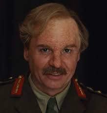

En Francia, durante la ocupación Alemana, Shosanna Dreyfus es testigo de
la ejecución de su familia a manos del Coronel Nazi Hans Landa. Shosanna
logra escapar y se refugia en Paris, donde adopta una nueva identidad y
comienza una nueva vida como propietaria y operadora de un cine.
Mientras tanto, en otro lugar de Europa, el Teniente Aldo Raine organiza
a un grupo de soldados judíos en misiones destinadas a impartir justo
castigo. Bautizado por sus enemigos como “The Basterds”, el escuadrón de
Raine recluta a la actriz, y agente encubierta alemana, Bridget Von
Hammersmark en una misión destinada a terminar con los líderes del
Tercer Reich. El destino converge en una marquesina de cine, donde
Shosanna se verá en la necesidad de ejecutar un plan de venganza por sus
propios medios.
Review
Director
Quentin Tarantino
Quentin Jerome Tarantino, nacido en Knoxville (Tennessee) el 27 de marzo
de 1963, es un director, guionista, productor y actor estadounidense
ganador de dos premios Oscar, un Globo de Oro, una Palma de Oro y un
premio BAFTA. Inició su carrera en la década de los 90. Sus películas se
caracterizan generalmente por utilizar historias no lineales, las
influencias estilísticas del Grindhouse, el Kung-Fu y el Spaghetti
Western.
Aldo "El Apache" Raine es un teniente estadounidense, y el líder de
los "Bastardos", así como uno de los principales protagonistas de la
película.
Bridget Von Hammersmark
Bridget Von Hammersmark era una popular estrella del cine nazi y una
espia para Los Aliados.
Shosanna Dreyfus
Shosanna Dreyfus (alias Emmanuelle Mimieux) hija de Perrier LaPadite
es una de las protagonistas principales de la pelicula. Ella es la
propietaria del cine "Le Gamaar Cinema", donde se proyectara la
pelicula "Stolz der Nation" o "El Orgullo del la nación".

Ed Fenech
Ed Fenech es una legendaria mente maestra del ejercito Britanico que
proporciona un complot para acabar con los líderes nazis
Coronel Hans Landa
El coronel Hans Landa es un oficial de la SS extremadamente cruel,
astuto y sin remordimientos, cuya personalidad parece extraída de
Reinhard Heydrich, apodado "El cazador de judíos", en referencia a su
gran habilidad para capturar judíos escondidos en Francia.
Frederick Zoller
El soldado Fredrick Zoller era un tirador de la Wehrmacht que se
convirtió en héroe de guerra después de matar al menos a 250 enemigos
en tres días. Joseph Goebbels decidió convertir sus hazañas en una
película de propaganda, llamada "Stolz der Nation" o "El Orgullo del
la nación", en la que Zoller actúa como él mismo.
Donny Donowitz
Donny "El Oso Judio" Donowitz es miembro de Los Bastardos. Fue apodado
El Oso Judio por su notoriedad al usar su bate de béisbol para
aplastar las cabezas de los soldados alemanes en los numerosos ataques
de Los Bastardos contra el ejército en la Francia ocupada por los
nazis.
Archie Hicox
El teniente Archibald "Archie" Hicox es un oficial del ejército
británico que se une a Los Bastardos, durante la Operación Kino, para
acabar con el Alto Mando alemán en el estreno de la película nazi "El
Orgullo del la nación".
Perrier LaPadite
Perrier LaPadite fue un granjero francés que escondió a los Dreyfus
(la familia de Shosanna) de los nazis.